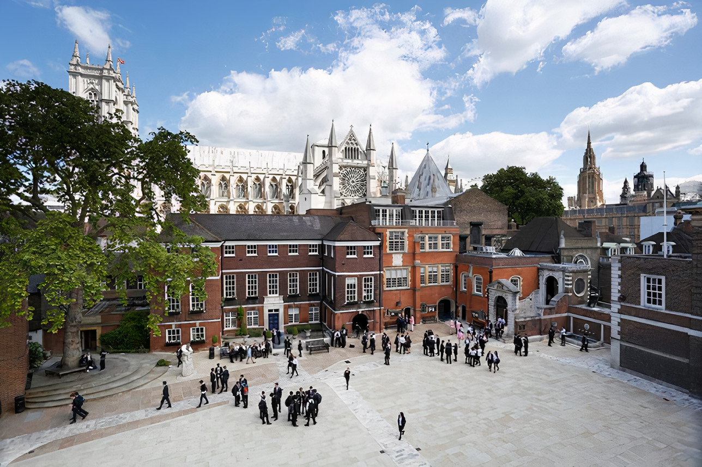
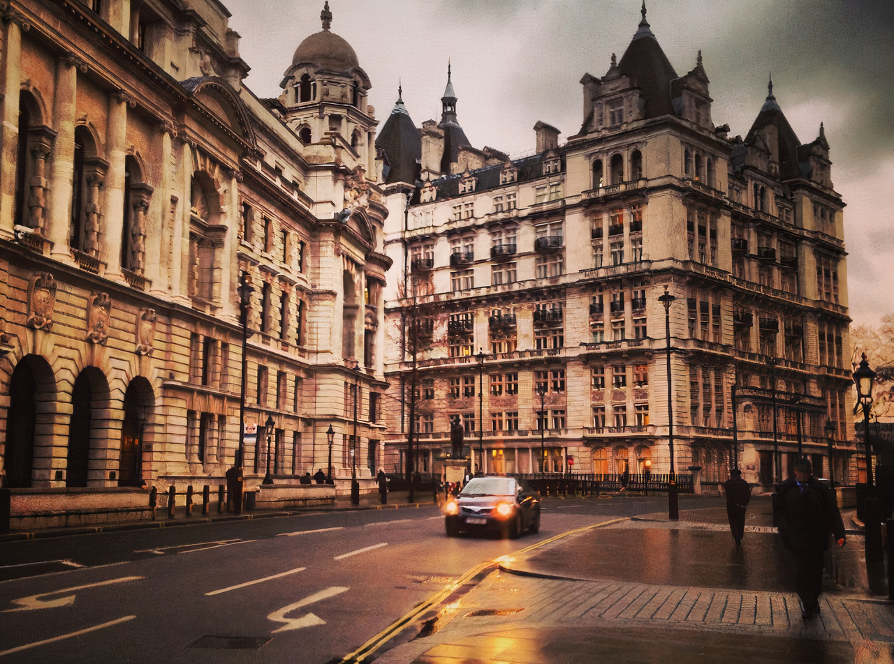

Education
I started college in Barnet and Southgate college where I studied business and finance for 3 years and after those 3 years went into university of Westminster where I actually study right now. Looking to finish 2 more years to graduate and get a full time job.
Initially I went on a Greek school since I was 6 to 14 years old where I learned English, Greek and Albanian. After those years in the Greek school I went into high school when I only finished my first year and moved to United Kingdom with my family.
